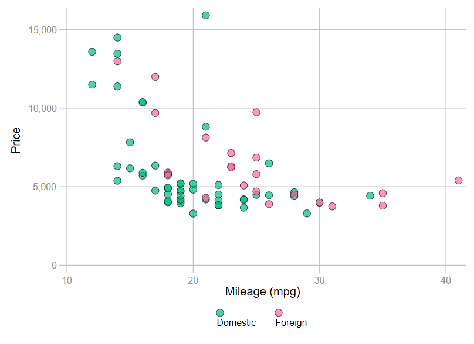
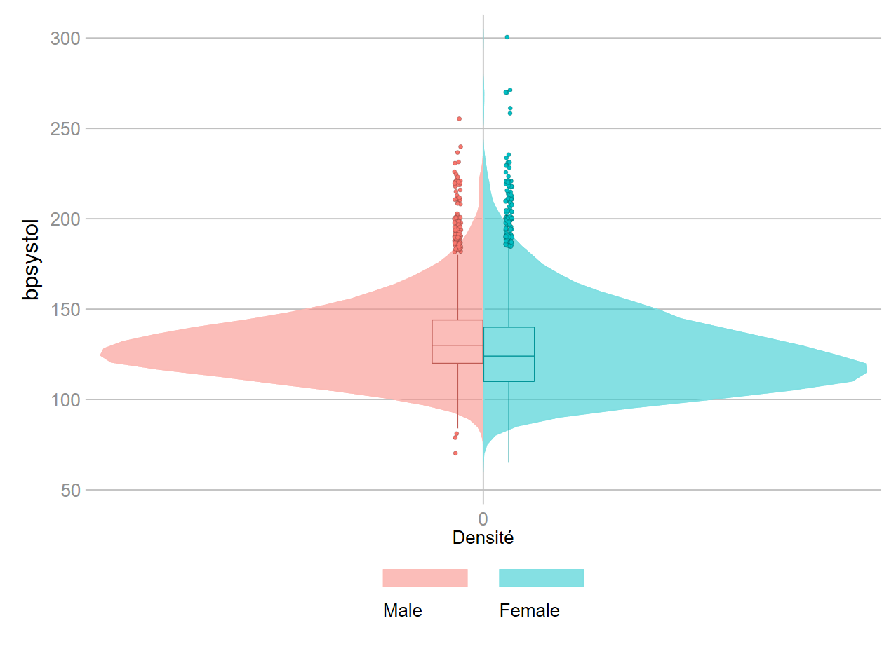

Formation
Marc Thevenin
19/06/2020
Graphiques et programmes de la page graphique
Nécessite l’installation des commandes de Ben Jann grstyle et colorpalette
ssc install grstyle
ssc install palettes, replace
ssc install colrspace, replace1 Générer et modifier des graphiques
1.1 Graph 1
sysuse uslifeexp.dta , clear
set scheme s2color
grstyle init
grstyle set legend, nobox stack
grstyle set plain, horizontal grid compact
grstyle set mesh, horizontal
tw line le year, title("Espérance de vie") name(g1,replace) ylabel(30(10)80)
tw line le le_male le_female year, ///
lc(*.3) title("Espérance de vie") ///
legend(order(1 "Ensemble" 2 "Hommes" 3 "Femmes") pos(4) col(1) ring(0)) name(g2,replace) ///
ylabel(30(10)80)
graph combine g1 g2
1.2 Graph 2
sysuse auto , clear
tw scatter price mpg if foreign==0 ///
|| scatter price mpg if foreign==1 ///
, legend(order(1 "Domestic" 2 "Foreign")) name(g1,replace)
tw scatter price mpg if foreign==0 , msiz(vlarge) mc(blue%50) mlc(black) mlw(vthin) ///
|| scatter price mpg if foreign==1 , msiz(vlarge) mc(red%50) mlc(black) mlw(vthin) ///
, legend(order(1 "Domestic" 2 "Foreign") region(lcolor(%0))) ///
graphr(color(white)) plotr(color(white)) name(g2,replace)
graph combine g1 g2, xsize(20) ysize(10) graphr(color(white)) plotr(color(white))
Deuxième graphique avec un seul élément
gen price0 = price if foreign==0
gen price1 = price if foreign==1
tw scatter price0 price1 mpg ///
, msiz(large large) mc(red%50 blue%50) mlc(black black) mlw(vthin vthin) ///
legend(order(1 "Domestic" 2 "Foreign")) name(g2,replace) jitter(5)2 [Quelques] Options graphiques
2.1 Graph 3
grstyle init
grstyle set legend, nobox stack
grstyle set plain, horizontal grid compact
grstyle set mesh, horizontal
*** Scatter
clear
set obs 200
gen x1=runiform(0,12)
gen y1=runiform(0,8)
gen x2=runiform(8,20)
gen y2=runiform(12,20)
******************************************
* Sans modification du contour
local o1 mc("248 118 109") msiz(large)
local o2 mc("0 191 196") msiz(large)
local o3 mc("248 118 109%50") msiz(large)
local o4 mc("0 191 196%50") msiz(large)
tw (scatter y2 x1, `o1') ///
|| (scatter y2 x2, `o2') ///
|| (scatter y1 x1, `o3') ///
|| (scatter y1 x2, `o4') ///
, legend(off) graphr(color(white)) plotr(color(white)) nodraw name(g1,replace)
******************************************
* Avec modification du contour
local o1 mc("248 118 109*0.5") msiz(large) mlc(black) mlw(vthin) msiz(large)
local o2 mc("0 191 196*0.5") msiz(large) mlc(black) mlw(vthin) msiz(large)
local o3 mc("248 118 109%50") msiz(large) mlc(black) mlw(vthin) msiz(large)
local o4 mc("0 191 196%50") msiz(large) mlc(black) mlw(vthin) msiz(large)
tw (scatter y2 x1, `o1') ///
|| (scatter y2 x2, `o2') ///
|| (scatter y1 x1, `o3') ///
|| (scatter y1 x2, `o4') ///
, legend(off) graphr(color(white)) plotr(color(white)) nodraw name(g2,replace)
graph combine g1 g2, graphr(color(white)) plotr(color(white)) ///
note("{bf:Nord-Ouest}: par défaut" ///
"{bf:Nord-Est}: contour noir et réduction de l'intensité *.5" ///
"{bf:Sud-Ouest}: contour par défaut et réduction de l'opacité %50 " ///
"{bf:Sud-Est}: contour noir et réduction de l'opacité %50") ///
title("Intensité - Opacité - Couleur du contour") 
2.2 Graph 4
* suite du programme précédent
gen y3=y2
gen y4=y3
gen y5=y4
gen y6=y5
gen y7=y6
gen y8=y7
gen y9=y8
gen y10=y9
gen y11=y10
graph bar y2 y3 y4, ///
bar(1,fcolor("33 144 140") lc(white)) ///
bar(2,fcolor("33 144 140*.5") lc(white)) ///
bar(3,fcolor("33 144 140%50") lc(white)) ///
legend(off) graphr(color(white)) plotr(color(white)) ///
note("{bf:Barre1}: Defaut" "{bf:Barre2}: *.5 d'intensité" "{bf:Barre3}: %50 de transparence" ///
"Couleur de la palette {bf:viridis} [n(1)]: RGB=33 144 140")
2.3 Graph 5
* suite du programme précédent
graph bar y2 y3 y4 y5 y6 y7 y8 y9 y10 y11 , ///
bar(1,fcolor(68 1 84) lc(white)) ///
bar(2,fcolor(33 144 140*.9) lc(white)) ///
bar(3,fcolor(68 1 84*.8) lc(white)) ///
bar(4,fcolor(33 144 140*.7) lc(white)) ///
bar(5,fcolor(68 1 84*.6) lc(white)) ///
bar(6,fcolor(33 144 140*.5) lc(white)) ///
bar(7,fcolor(68 1 84*.4) lc(white)) ///
bar(8,fcolor(33 144 140*.3) lc(white)) ///
bar(9,fcolor(68 1 84*.2) lc(white)) ///
bar(10,fcolor(33 144 140*.1) lc(white)) ///
legend(pos(3) col(1) ///
order(1 "*1" 2 "*.9" 3 "*.8" 4 "*.7" 5 "*.6" 6 "*.5" 7 "*.4" 8 "*.3" 9 "*.2" 10 "*.1" )) ///
title("Reduction de l'intensité") name(g1,replace) nodraw ylabel(0(2)16)
* transparence
graph bar y2 y3 y4 y5 y6 y7 y8 y9 y10 y11 , ///
bar(1,fcolor(68 1 84) lc(white)) ///
bar(2,fcolor(33 144 140%90) lc(white)) ///
bar(3,fcolor(68 1 84%80) lc(white)) ///
bar(4,fcolor(33 144 140%70) lc(white)) ///
bar(5,fcolor(68 1 84%60) lc(white)) ///
bar(6,fcolor(33 144 140%50) lc(white)) ///
bar(7,fcolor(68 1 84%40) lc(white)) ///
bar(8,fcolor(33 144 140%30) lc(white)) ///
bar(9,fcolor(68 1 84%20) lc(white)) ///
bar(10,fcolor(33 144 140%10) lc(white)) ///
legend(pos(3) col(1) ///
order(1 "%10" 2 "%90" 3 "%80" 4 "%70" 5 "%60" 6 "%50" 7 "%40" 8 "%30" 9 "%20" 10 "%10" )) ///
title("Reduction de l'opacité") name(g2,replace) nodraw ylabel(0(2)16)
graph combine g1 g2, ///
note("Couleurs de la palette {bf:viridis} [n(10)]" ///
"Couleur1: RGB=68 1 84" ///
"Couleur2: RGB=33 144 140", size(vsmall)) 
2.4 Graph 6
clear
set obs 12
gen x=_n
gen y=_n
grstyle init
grstyle set plain, horizontal grid compact
grstyle set mesh, horizontal
grstyle set color hue, n(12)
tw scatter y x in 1, msize(vtiny) mlc(black) mlw(vthin) ///
|| scatter y x in 2, msize(tiny) mlc(black) mlw(vthin) ///
|| scatter y x in 3, msize(vsmall) mlc(black) mlw(vthin) ///
|| scatter y x in 4, msize(small) mlc(black) mlw(vthin) ///
|| scatter y x in 5, msize(medsmall) mlc(black) mlw(vthin) ///
|| scatter y x in 6, msize(medium) mlc(black) mlw(vthin) ///
|| scatter y x in 7, msize(medlarge) mlc(black) mlw(vthin) ///
|| scatter y x in 8, msiz(large) mlc(black) mlw(vthin) ///
|| scatter y x in 9, msiz(vlarge) mlc(black) mlw(vthin) ///
|| scatter y x in 10, msiz(huge) mlc(black) mlw(vthin) ///
|| scatter y x in 11, msiz(vhuge) mlc(black) mlw(vthin) ///
|| scatter y x in 12, msiz(ehuge) mlc(black) mlw(vthin) ///
,legend(off) xtitle("") ytitle("") ///
xlab(, nogrid labc(%0)) ///
ylab(1 "vtiny" 2 "tiny" 3 "vsmall" 4 "small" 5 "medsmall" 6 "medium" 7 "medlarge" ///
8 "large" 9 "vlarge" 10 "huge" 11 "vhuge" 12 "ehuge") scale(.9) ///
title("Circle marker size" "{stMono:msize() msiz()}", pos(11))
2.5 Graph 7
* suite du programme précédent
local m circle diamond triangle square
foreach m2 of local m {
tw scatter y x in 1, msize(vtiny) mlc(black) mlw(vthin) m(`m2') ///
|| scatter y x in 2, msize(tiny) mlc(black) mlw(vthin) m(`m2') ///
|| scatter y x in 3, msize(vsmall) mlc(black) mlw(vthin) m(`m2') ///
|| scatter y x in 4, msize(small) mlc(black) mlw(vthin) m(`m2') ///
|| scatter y x in 5, msize(medsmall) mlc(black) mlw(vthin) m(`m2') ///
|| scatter y x in 6, msize(medium) mlc(black) mlw(vthin) m(`m2') ///
|| scatter y x in 7, msize(medlarge) mlc(black) mlw(vthin) m(`m2') ///
|| scatter y x in 8, msiz(large) mlc(black) mlw(vthin) m(`m2') ///
|| scatter y x in 9, msiz(vlarge) mlc(black) mlw(vthin) m(`m2') ///
|| scatter y x in 10, msiz(huge) mlc(black) mlw(vthin) m(`m2') ///
|| scatter y x in 11, msiz(vhuge) mlc(black) mlw(vthin) m(`m2') ///
|| scatter y x in 12, msiz(ehuge) mlc(black) mlw(vthin) m(`m2') ///
,legend(off) xtitle("") ytitle("") ///
xlab(, nogrid labc(%0)) ///
ylab(1 "vtiny" 2 "tiny" 3 "vsmall" 4 "small" 5 "medsmall" 6 "medium" 7 "medlarge" ///
8 "large" 9 "vlarge" 10 "huge" 11 "vhuge" 12 "ehuge") scale(.9) ///
title("{stMono: msymbol(`m2')}", pos(11)) name("`m2'", replace) nodraw
}
graph combine circle diamond triangle square, cols(2) ///
title("Solid marker size" "{stMono:msize() msiz()}", pos(11))
2.6 Graph 8
* suite du programme précédent
local m m plus X arrowf arrow pipe V
foreach m2 of local m {
tw scatter y x in 1, msize(vtiny) mlw(medthin) m(`m2') ///
|| scatter y x in 2, msize(tiny) mlw(medthin) m(`m2') ///
|| scatter y x in 3, msize(vsmall) mlw(medthin) m(`m2') ///
|| scatter y x in 4, msize(small) mlw(medthin) m(`m2') ///
|| scatter y x in 5, msize(medsmall) mlw(medthin) m(`m2') ///
|| scatter y x in 6, msize(medium) mlw(medthin) m(`m2') ///
|| scatter y x in 7, msize(medlarge) mlw(medthin) m(`m2') ///
|| scatter y x in 8, msiz(large) mlw(medthin) m(`m2') ///
|| scatter y x in 9, msiz(vlarge) mlw(medthin) m(`m2') ///
|| scatter y x in 10, msiz(huge) mlw(medthin) m(`m2') ///
|| scatter y x in 11, msiz(vhuge) mlw(medthin) m(`m2') ///
|| scatter y x in 12, msiz(ehuge) mlw(medthin) m(`m2') ///
,legend(off) xtitle("") ytitle("") ///
xlab(, nogrid labc(%0)) ///
ylab(1 "vtiny" 2 "tiny" 3 "vsmall" 4 "small" 5 "medsmall" 6 "medium" 7 "medlarge" ///
8 "large" 9 "vlarge" 10 "huge" 11 "vhuge" 12 "ehuge") scale(.9) ///
title("{stMono: msymbol(`m2')}", pos(11)) name("`m2'", replace) nodraw
}
graph combine plus X arrowf arrow pipe V , cols(2) ///
title("Symbol marker size" "{stMono:msize() msiz()}", pos(11) size(medium)) ///
note("Epaisseur du trait:{stMono: mlw(medthin)}")
2.7 Graph 9
* suite du programme précédent
local m m circle_hollow diamond_hollow triangle_hollow square_hollow
foreach m2 of local m {
tw scatter y x in 1, msize(vtiny) mlw(medthin) m(`m2') ///
|| scatter y x in 2, msize(tiny) mlw(medthin) m(`m2') ///
|| scatter y x in 3, msize(vsmall) mlw(medthin) m(`m2') ///
|| scatter y x in 4, msize(small) mlw(medthin) m(`m2') ///
|| scatter y x in 5, msize(medsmall) mlw(medthin) m(`m2') ///
|| scatter y x in 6, msize(medium) mlw(medthin) m(`m2') ///
|| scatter y x in 7, msize(medlarge) mlw(medthin) m(`m2') ///
|| scatter y x in 8, msiz(large) mlw(medthin) m(`m2') ///
|| scatter y x in 9, msiz(vlarge) mlw(medthin) m(`m2') ///
|| scatter y x in 10, msiz(huge) mlw(medthin) m(`m2') ///
|| scatter y x in 11, msiz(vhuge) mlw(medthin) m(`m2') ///
|| scatter y x in 12, msiz(ehuge) mlw(medthin) m(`m2') ///
,legend(off) xtitle("") ytitle("") ///
xlab(, nogrid labc(%0)) ///
ylab(1 "vtiny" 2 "tiny" 3 "vsmall" 4 "small" 5 "medsmall" 6 "medium" 7 "medlarge" ///
8 "large" 9 "vlarge" 10 "huge" 11 "vhuge" 12 "ehuge") scale(.9) ///
title("{stMono: msymbol(`m2')}", pos(11)) name("`m2'", replace) nodraw
}
graph combine circle_hollow diamond_hollow triangle_hollow square_hollow , cols(2) ///
title("Hollow marker size" "{stMono:msize() msiz()}", pos(11)) scale(.9) ///
note("Epaisseur du trait:{stMono: mlw(medthin)}", size(vsmall))
2.8 Graph 10
* suite du programme précédent
colorpalette hue, n(10) nograph reverse
tw scatter y x in 1, mc(%0) mlc(%0) ylab(0(1)10) ///
yline(1, lc(`r(p1)') lw(vvthin)) ///
yline(2, lc(`r(p2)') lw(vthin)) ///
yline(3, lc(`r(p3)') lw(thin)) ///
yline(4, lc(`r(p4)') lw(medthin)) ///
yline(5, lc(`r(p5)') lw(medium)) ///
yline(6, lc(`r(p6)') lw(medthick)) ///
yline(7, lc(`r(p7)') lw(thick)) ///
yline(8, lc(`r(p8)') lw(vthick)) ///
yline(9, lc(`r(p9)') lw(vvthick)) ///
yline(10, lc(`r(p10)') lw(vvvthick)) ///
ylab(1 "vvthin" 2 "vthin" 3 "thin" 4 "medthin" 5 "medium" 6 "medthick" 7 "thick" ///
8 "vthick" 9 "vvthick" 10 "vvvthick") xtitle("") ytitle("") ///
title("line width" "{stMono:lwidth() lw()}", pos(11)) xlab(, nogrid labc(%0)) 
2.9 Graph 11
* suite du programme précédent
local c solid dash dot dash_dot shortdash shortdash_dot longdash longdash_dot
foreach c2 of local c {
colorpalette viridis, n(10) nograph reverse
tw scatter y x in 1, mc(%0) mlc(%0) ylab(0(1)10) ///
yline(1, lp(`c2') lc(`r(p1)') lw(vvthin)) ///
yline(2, lp(`c2') lc(`r(p2)') lw(vthin)) ///
yline(3, lp(`c2') lc(`r(p3)') lw(thin)) ///
yline(4, lp(`c2') lc(`r(p4)') lw(medthin)) ///
yline(5, lp(`c2') lc(`r(p5)') lw(medium)) ///
yline(6, lp(`c2') lc(`r(p6)') lw(medthick)) ///
yline(7, lp(`c2') lc(`r(p7)') lw(thick)) ///
yline(8, lp(`c2') lc(`r(p8)') lw(vthick)) ///
yline(9, lp(`c2') lc(`r(p9)') lw(vvthick)) ///
yline(10,lp(`c2') lc(`r(p10)') lw(vvvthick)) ///
ylab(1 "vvthin" 2 "vthin" 3 "thin" 4 "medthin" 5 "medium" 6 "medthick" 7 "thick" ///
8 "vthick" 9 "vvthick" 10 "vvvthick") xtitle("") ///
xlab(, nogrid labc(%0)) title("{stMono: lp(`c2')}", pos(11)) name("`c2'", replace) nodraw ytitle("")
}
graph combine solid dash dot dash_dot shortdash shortdash_dot longdash longdash_dot, cols(4) ///
title("Pattern line width: {stMono:lwidth() - lw()}", pos(11)) scale(.8)
2.10 Graph 12
* suite du programme précédent
gen z="TEXT"
gen x2=1
grstyle init
grstyle set plain, horizontal grid compact
grstyle set mesh, horizontal
grstyle set color matplotlib, jet n(11) reverse
tw scatter y x in 1, mlabel(z) mlabs(minuscule) mc(%0) ///
|| scatter y x in 2, mlabel(z) mlabs(tiny) mc(%0) ///
|| scatter y x in 3, mlabel(z) mlabs(vsmall) mc(%0) ///
|| scatter y x in 4, mlabel(z) mlabs(small) mc(%0) ///
|| scatter y x in 5, mlabel(z) mlabs(medsmall) mc(%0) ///
|| scatter y x in 6, mlabel(z) mlabs(medium) mc(%0) ///
|| scatter y x in 7, mlabel(z) mlabs(medlarge) mc(%0) ///
|| scatter y x in 8, mlabel(z) mlabs(large) mc(%0) ///
|| scatter y x in 9, mlabel(z) mlabs(vlarge) mc(%0) ///
|| scatter y x in 10, mlabel(z) mlabs(huge) mc(%0) ///
|| scatter y x in 11, mlabel(z) mlabs(vhuge) mc(%0) ///
legend(off) xlab(0(1)16) ///
ylab(1 "minuscule" 2 "tiny" 3"vsmall" 4 "small" 5 "medsmall" 6 "medium" 7 "medlarge" 8 "large" ///
9 "vlarge" 10 "huge" 11 "vhuge" ) ///
xlab(, nogrid labc(%0)) xtitle("") ytitle("") ///
title("Text size: {stMono:size()}", pos(11)) ///
note("Option pour {stMono:title() legend() note() caption() mlabel()}", size(small))
2.11 Graph 13
sysuse auto, clear
gen price0 = price if foreign==0
gen price1 = price if foreign==1
kdensity price if foreign==1, g(x1 d1) nograph
kdensity price if foreign==0, g(x0 d0) nograph
tw histogram price0, freq fcolor(blue%50) lc(%0) ///
|| histogram price1, freq fcolor(red%50) lc(%0) ///
legend(order(1 "Domestic" 2 "Foreign") region(lcolor(%0))) ///
name(g1,replace) xlabel(000(5000)20000) graphr(color(white)) plotr(color(white))
tw area d1 d0 x0, fc(blue%50 red%50) lc(%0 %0) ///
legend(order(1 "Domestic" 2 "Foreign") region(lcolor(%0))) name(g2,replace) xlabel(0000(5000)20000) ylabel(0(0.0001)0.0004) ///
xtitle("") graphr(color(white)) plotr(color(white))
graph combine g1 g2, xsize(20) ysize(10) title("Distribution de la variable {bf:price}") ///
graphr(color(white)) plotr(color(white))
2.12 Graph 14
* Suite du programme précédent
tw lfitci price mpg if foreign==0, clcolor(blue*1.2) fcolor(blue%10) alcolor(%0) ///
|| lfitci price mpg if foreign==1, clcolor(red*1.2) fcolor(red%10) alcolor(%0) ///
|| scatter price mpg if foreign==0, msize(medlarge) mlc(black) mlw(vthin) mc(blue*.5) ///
|| scatter price mpg if foreign==1, msize(medlarge) mlc(black) mlw(vthin) mc(red*.5) ///
, legend(order(5 "Domestic" 6 "Foreign")) /// ///
ytitle("price") xtitle("mpg") 
2.13 Graph 15
* nord sud exterieur
local l 11 12 1 7 6 5
foreach l2 of local l {
tw function y=normalden(x), range(-5 5) color(red%30) lc(%0) recast(area) ///
|| function y=logisticden(x), range(-5 5) color(blue%30) lc(%0) recast(area) ///
plotregion(style(none)) ysca(off) xsca(noline) legend(off) xtitle("") ///
title("{stMono:pos(`l2') ring(1)}", pos(`l2') ring(1)) name(g`l2', replace) nodraw
}
graph combine g11 g12 g1 g7 g6 g5, title("Exterieur", pos(11)) nodraw name(nse, replace)
* nord sud interieur
local l 11 12 1 7 6 5
foreach l2 of local l {
tw function y=normalden(x), range(-5 5) color(red%30) lc(%0) recast(area) ///
|| function y=logisticden(x), range(-5 5) color(blue%30) lc(%0) recast(area) ///
plotregion(style(none)) ysca(off) xsca(noline) legend(off) xtitle("") ///
title("{stMono:pos(`l2') ring(1)}", pos(`l2') ring(0)) name(g`l2', replace) nodraw
}
graph combine g11 g12 g1 g7 g6 g5, title("Intérieur", pos(11)) nodraw name(nsi, replace)
graph combine nsi nse, col(1) xsize(15) ysize(20) 
2.14 Graph 16
* est ouest exterieur
local l 2 3 4 8 9 10
foreach l2 of local l {
tw function y=normalden(x), range(-5 5) color(red%30) lc(%0) recast(area) ///
|| function y=logisticden(x), range(-5 5) color(blue%30) lc(%0) recast(area) ///
plotregion(style(none)) ysca(off) xsca(noline) legend(off) xtitle("") ///
title("{stMono:pos(`l2')}" "{stMono:ring(1)}", pos(`l2') ring(1)) name(g`l2', replace) nodraw
}
graph combine g10 g2 g9 g3 g8 g4 , col(2) title("Exterieur", pos(11)) nodraw name(eoe, replace)
* est ouest intérieur
local l 2 3 4 8 9 10
foreach l2 of local l {
tw function y=normalden(x), range(-5 5) color(red%30) lc(%0) recast(area) ///
|| function y=logisticden(x), range(-5 5) color(blue%30) lc(%0) recast(area) ///
plotregion(style(none)) ysca(off) xsca(noline) legend(off) xtitle("") ///
title("{stMono:pos(`l2')}" "{stMono:ring(1)}", pos(`l2') ring(0)) name(g`l2', replace) nodraw
}
graph combine g10 g2 g9 g3 g8 g4 , col(2) title("Intérieur", pos(11)) nodraw name(eoi, replace)
graph combine eoi eoe, col(1) xsize(15) ysize(20)
2.15 Graph 16
sysuse lifeexp, clear
grstyle init
grstyle set plain, horizontal grid compact
grstyle set imesh, horizontal
grstyle set color plasma, n(3) reverse
local l legend(order(1 "Eur & C.Asia" 2 "N.A" 3 "S.A") col(3) region(lc(%0)))
local o msiz(medium) mc(%70) mlc(black) mlw(vthin) jitter(2)
tw scatter lexp gnppc if region==1, `o' ///
|| scatter lexp gnppc if region==2, `o' ///
|| scatter lexp gnppc if region==3, `o' ///
, title("Par défaut") `l' nodraw name(xy1,replace)
local l legend(order(1 "Eur & C.Asia" 2 "N.A" 3 "S.A") col(3) region(lc(%0)))
local o msiz(medium) mc(%70) mlc(black) mlw(vthin) jitter(2)
tw scatter lexp gnppc if region==1, `o' ///
|| scatter lexp gnppc if region==2, `o' ///
|| scatter lexp gnppc if region==3, `o' ///
, title("Options1") `l' ///
xscale(log) xlabel(,alt) ytitle(, size(small)) xtitle(, size(small)) nodraw name(xy2,replace)
local l legend(order(1 "Eur & C.Asia" 2 "N.A" 3 "S.A") col(3) region(lc(%0)))
local o msiz(medium) mc(%70) mlc(black) mlw(vthin) jitter(2)
tw scatter lexp gnppc if region==1, `o' ///
|| scatter lexp gnppc if region==2, `o' ///
|| scatter lexp gnppc if region==3, `o' ///
, title("Options 2") `l' ///
xscale(log) xlabel(10000 "10k" 20000 "20k" 30000 "30k" 40000 "40k") ///
ylabel(50(5)80) ytitle(, size(small)) xtitle(, size(small)) nodraw name(xy3,replace)
graph twoway scatteri 1 1 "No Data", mlabsize(*0) mlabpos(0) msym(i) ///
yscale(off noline) xscale(off noline) ///
plotregion(style(none)) ///
note("{bf: Options 1}:" ///
" - Axe X (revenu) en échelle log" ///
" {stMono: xscale(log)}" ///
" - Positions label axe X alterneés " ///
" {stMono: xslabel(alt)}" ///
" - Réduction de la taille du titre des axes" ///
" {stMono: xtitle(size(small)) ytitle(size(small))}" ///
" " ///
"{bf: Options 2}:" ///
" - Minimum de l'axe Y à 50 ans" ///
" {stMono: ylabel(50(5)80)}" ///
" - Modification manuelle des labels de l'axe X" ///
" {stMono: xlabel(10000 '10k' 20000 '20k' /// }" ///
" {stMono:30000 '30k' 40000 '40k')}" ///
, pos(9) ring(0)) nodraw name(xy4,replace)
graph combine xy1 xy2 xy3 xy4, iscale(.7) title(""Espérance de vie et revenu" ")
2.16 Graph 17
grstyle init
grstyle set plain, horizontal grid compact
grstyle set imesh, horizontal
grstyle set color viridis, n(2) reverse
sysuse auto, clear
local ops mcolor(%70) mlc(black) mlw(vthin)
tw scatter mpg price if foreign==0, `ops' ///
|| scatter mpg price if foreign==1, `ops' ///
, title("TITRE", pos(11)) ///
subtitle("Sous Titre", pos(11)) ///
note("NOTE", pos(6), ) ///
caption("Caption", pos(5)) ///
legend(order(1 "{bf:Domestic}" 2 "{bf:Foreign}") pos(1) ring(0) col(1) region(lw(vvthin) fc(%50)) stack) ///
text(10000 30 "TEXT: Y=10000 X=30")
local ops mcolor(%70) mlc(black) mlw(vthin) msize(large) jitter(3)
tw scatter mpg price if foreign==0, `ops' ///
|| scatter mpg price if foreign==1, `ops' ///
title("Legende par défaut") nodraw name(l1, replace)
tw scatter mpg price if foreign==0, `ops' ///
|| scatter mpg price if foreign==1, `ops' ///
, title("Modification de la légende") ///
legend(order(1 "{bf:Domestic}" 2 "{bf:Foreign}") ///
pos(1) ring(0) col(1) ///
region(lw(vvthin)) ///
stack) nodraw name(l2, replace)
graph combine l1 l2, xsize(20) ysize(10) 
3 Macros
3.1 Graph 18 & 19
sysuse auto, clear
gen rep= rep78<4
label define rep 0 "rep<4" 1 "rep>=4", modify
label value rep rep
local varname rep
local labn: value label `varname'
levelsof `varname', local(l)
foreach l2 of local l {
local lab`l2': label `labn' `l2'
}
grstyle init
grstyle set plain, horizontal grid compact
grstyle set mesh, horizontal
tw scatter price mpg if `varname'==0, mc("0 191 125%70") mlc(black) mlw(vthin) msiz(medlarge) ///
|| scatter price mpg if `varname'==1, mc("255 103 164%70") mlc(black) mlw(vthin) msiz(medlarge) ///
, legend(order(1 "`lab0'" 2 "`lab1'"))
* Programme précédent
* On change juste la ligne suivant en remplaçant rep par foreign
local varname foreign
3.2 Graph 20
* suite du programme précédent
xtile qprice = price, n(4)
local varlist price mpg
foreach v of loc varlist {
qui sum `v'
local m`v' : di %6.2f `r(mean)'
}
grstyle init
grstyle set plain, horizontal grid compact
grstyle set mesh, horizontal
grstyle set color hue, n(4) opacity(70) reverse
tw scatter price mpg if qprice==1, mlc(black) mlw(vthin) mc(%70) msiz(medlarge) ///
|| scatter price mpg if qprice==2, mlc(black) mlw(vthin) mc(%70) msiz(medlarge) ///
|| scatter price mpg if qprice==3, mlc(black) mlw(vthin) mc(%70) msiz(medlarge) ///
|| scatter price mpg if qprice==4, mlc(black) mlw(vthin) mc(%70) msiz(medlarge) ///
yline(`mprice', lw(vthin) lc(black)) xline(`mmpg', lw(vthin) lc(black)) ///
note("Moyenne Price = `mprice'" ///
"Moyenne Mpg = `mmpg'" ) legend(off)
3.3 Graph 21
local i=1
local varlist displacement mpg qdisplacement
tokenize `varlist'
xtile q`1' = `1', n(4)
foreach v of loc varlist {
qui sum `v'
local m`i++' : di %6.2f `r(mean)'
}
tw scatter `1' `2' if `3'==1, mlc(black) mlw(vthin) mc(%70) msiz(medlarge) ///
|| scatter `1' `2' if `3'==2, mlc(black) mlw(vthin) mc(%70) msiz(medlarge) ///
|| scatter `1' `2' if `3'==3, mlc(black) mlw(vthin) mc(%70) msiz(medlarge) ///
|| scatter `1' `2' if `3'==4, mlc(black) mlw(vthin) mc(%70) msiz(medlarge) ///
yline(`m1', lw(vthin) lc(black)) xline(`m2', lw(vthin) lc(black)) ///
note("Moyenne `1' = `m1'" ///
"Moyenne `2' = `m2'" ) legend(off)
3.4 Graph 22
grstyle init
grstyle set plain, horizontal grid compact
grstyle set mesh, horizontal
grstyle set color viridis, n(5) opacity(70)
local ops "mlc(black) mlw(vthin) mc(%60) msiz(medlarge) jitter(2)"
tw scatter price mpg if rep78==1, `ops' ///
|| scatter price mpg if rep78==2, `ops' ///
|| scatter price mpg if rep78==3, `ops' ///
|| scatter price mpg if rep78==4, `ops' ///
|| scatter price mpg if rep78==5, `ops' ///
legend(off) 
3.5 Graph 23
*webuse nhanes2, clear
*save nhanes2, replace
use nhanes2, clear
capture program drop viop
program define viop
syntax varlist, [gops(string)] [color(string)]
tokenize `varlist'
local y `1'
local z `2'
local bw 5
levelsof `z', local(l)
local i=1
foreach s of local l {
local j `i++'
qui kdensity `y' if `z'==`s', gen(x`j' d`j') nograph kernel(gau) bw(`bw')
qui sum d`j', d
local min`j' `r(min)'
local max`j' `r(max)'
qui replace d`j' = d`j'*(.3/(`max`j''- `min`j''))
}
replace d1=-d1
local i=1
foreach s of local l {
local j `i++'
qui sum d`j', d
local min`j' `r(min)'
local max`j' `r(max)'
qui replace d1 = d1 + (-1)*`max1'
qui replace d2 = d2 - `min2'
}
****** valeurs pour boxplot
** coordonnées
local i=1
foreach s of local l {
local j `i++'
qui sum `y' if `z'==`s', d
local q2`j': di %6.1f `r(p50)'
local q1`j' : di %6.1f `r(p25)'
local q3`j' : di %6.1f `r(p75)'
scalar min = `q1`j'' - 1.5*(`q3`j'' - `q1`j'')
local inf`j' = scalar(min)
scalar max = `q3`j'' + 1.5*(`q3`j'' - `q1`j'')
local sup`j' = scalar(max)
}
** outliers
qui gen _yo1 = -.02
qui gen _yo2 = .02
local i=1
foreach s of local l {
local j `i++'
qui gen _out`j'= `y' if (`y'>`sup`j'' | `y'<`inf`j'') & `z'==`s'
}
* legend: order(...)
local labn: value label `z'
local i=1
foreach s of local l {
local j `i++'
capture local lab`j': label `labn' `s'
}
* style - couleurs"
grstyle init
grstyle set plain, horizontal grid compact
grstyle set mesh, horizontal
grstyle set color hue, n(2)
colorpalette hue ,n(2) nograph
tw area d1 x1, horizontal fc(%60) lc(*0.5) lw(thin) ///
|| area d2 x2, horizontal fc(%60) lc(*0.5) lw(thin) ///
|| pci `q11' -.04 `q11' 0, lc("`r(p1)'*1.3") lw(vthin) ///
|| pci `q21' -.04 `q21' 0, lc("`r(p1)'*1.3") lw(vthin) ///
|| pci `q31' -.04 `q31' 0, lc("`r(p1)'*1.3") lw(vthin) ///
|| pci `q11' -.04 `q31' -.04, lc("`r(p1)'*1.3") lw(vthin) ///
|| pci `q11' -.0003 `q31' -.0003, lc("`r(p1)'*1.3") lw(vthin) ///
|| pci `inf1' -.02 `q11' -.02, lc("`r(p1)'*1.3") lw(vthin) ///
|| pci `q31' -.02 `sup1' -.02, lc("`r(p1)'*1.3") lw(vthin) ///
|| scatter _out1 _yo1, msize(vsmall) mlc(black) mlw(vvthin) mc("`r(p1)'") jitter(1) ///
|| pci `q12' .04 `q12' 0, lc("`r(p2)'*1.3") lw(vthin) ///
|| pci `q22' .04 `q22' 0, lc("`r(p2)'*1.3") lw(vthin) ///
|| pci `q32' .04 `q32' 0, lc("`r(p2)'*1.3") lw(vthin) ///
|| pci `q12' .04 `q32' .04, lc("`r(p2)'*1.3") lw(vthin) ///
|| pci `q12' .0003 `q32' .0003, lc("`r(p2)'*1.3") lw(vthin) ///
|| pci `inf2' .02 `q12' .02, lc("`r(p2)'*1.3") lw(vthin) ///
|| pci `q32' .02 `sup2' .02, lc("`r(p2)'*1.3") lw(vthin) ///
|| scatter _out2 _yo2, msize(vsmall) mlc(black) mlw(vvthin) mc("`r(p2)'") jitter(1) ///
, ytitle("`y'") xlab(0 "0") xtitle("densité") ///
legend(order(1 "`lab1'" 2 "`lab2'") ///
stack region(lw(vvthin) lc(%0))) `gops'
drop d1 d2 x1 x2 _y* _out*
end